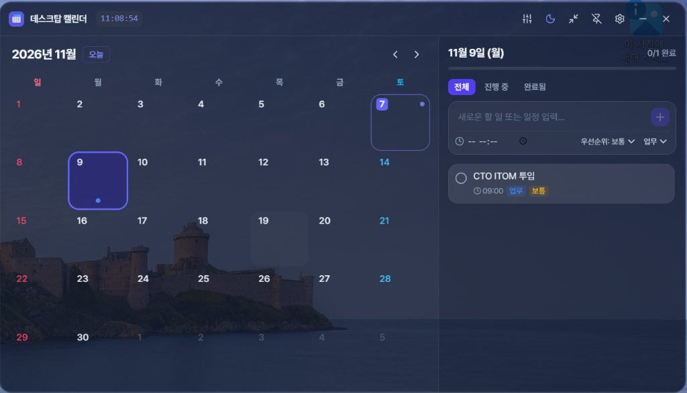

한국 공휴일 자동 계산, 아크릴 글래스모피즘 디자인, 초소형 미니 시계 위젯 모드까지.
업무와 일상의 생산성을 높여주는 최고의 데스크탑 동반자입니다.

▲ 실제 윈도우 바탕화면에서 구동 중인 데스크탑 캘린더 위젯 모습
필요한 모든 기능이 바탕화면에
2024~2028년 양력/음력 명절(설날, 추석) 및 대체공휴일을 자동 계산하여 달력에 빨간색으로 표기하고 명칭을 직관적으로 보여줍니다.
상단 헤더를 마우스로 끌어 바탕화면 원하는 위치 어디든 배치할 수 있으며, 핀 버튼으로 항상 위에 띄워두거나 배경처럼 둘 수 있습니다.
화면을 많이 차지하지 않는 340x460 콤팩트 모드로 전환하면, 실시간 초단위 디지털 시계와 오늘의 필수 일정 체크리스트로 변신합니다.
단순한 점(Dot) 표시를 넘어 날짜 칸에 일정 제목과 시간이 깔끔한 칩 형태로 표시되어 한눈에 일정을 파악할 수 있습니다.
30% ~ 100% 실시간 투명도 슬라이더와 함께 다크(Dark), 화이트(Light), 아크릴 글래스(Glass) 3가지 테마를 취향대로 선택하세요.
윈도우 작업 표시줄 트레이와 완벽 연동되며, 모든 일정과 설정은 외부 서버가 아닌 내 PC에 안전하게 JSON 형태로 백업 및 복원됩니다.
별도의 복잡한 가입이나 인터넷 연결 없이 바로 실행할 수 있습니다.
Windows용 설치 파일(.exe) 또는 무설치 압축 파일(.zip)을 내려받습니다.
실행 후 바탕화면 원하는 곳으로 드래그하여 배치합니다. 위치는 자동 저장됩니다.
날짜를 클릭하여 새로운 일정을 추가하고 핀 고정 또는 미니 모드를 활용해 보세요.